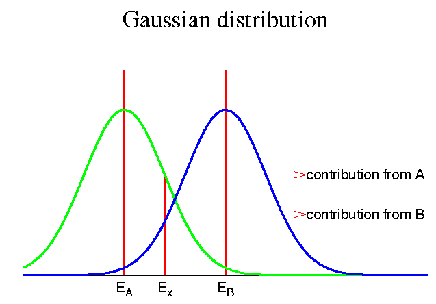

set term postscript eps enhanced color solid
set output "gauss.eps"
set size 0.6,0.6
set border 1
set xlabel ""
set xrange [ 0 : 20 ]
set ylabel ""
set yrange [ 0 : 0.4 ]
set title "Gaussian distribution" "Times-Roman,24"
a = 5
b = 10
c = 7
g = 2
g1(x)=exp(-(x-a)*(x-a)/g/g/2.0)/sqrt(pi)/g
g2(x)=exp(-(x-b)*(x-b)/g/g/2.0)/sqrt(pi)/g
p1=g1(c)
p2=g2(c)
p3= (p1>p2) ? p1 : p2
set linestyle 1 lt 1 lw 3
set linestyle 2 lt 1 lw 1
set linestyle 3 lt 2 lw 3
set linestyle 4 lt 3 lw 3
set arrow from a,0.35 to a,0.0 nohead linestyle 1
set arrow from b,0.35 to b,0.0 nohead linestyle 1
set arrow from c,p3 to c,0.0 nohead linestyle 1
set arrow from c,p1 to 14,p1 linestyle 2
set arrow from c,p2 to 14,p2 linestyle 2
set label "contribution from A" at 14,p1
set label "contribution from B" at 14,p2
set xtics nomirror ("E_A" a, "E_x" c, "E_B" b)
set ytics nomirror ("" 0)
plot g1(x) notitle with lines linestyle 3,\
g2(x) notitle with lines linestyle 4
pause -1
